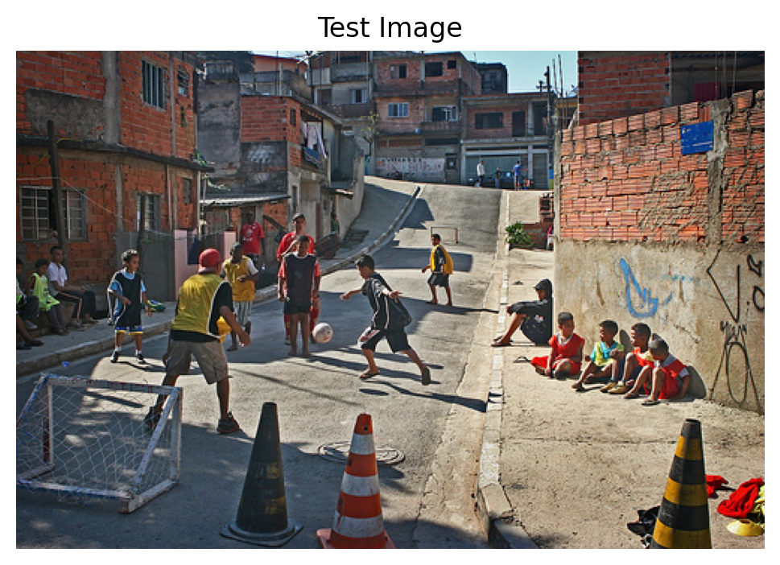
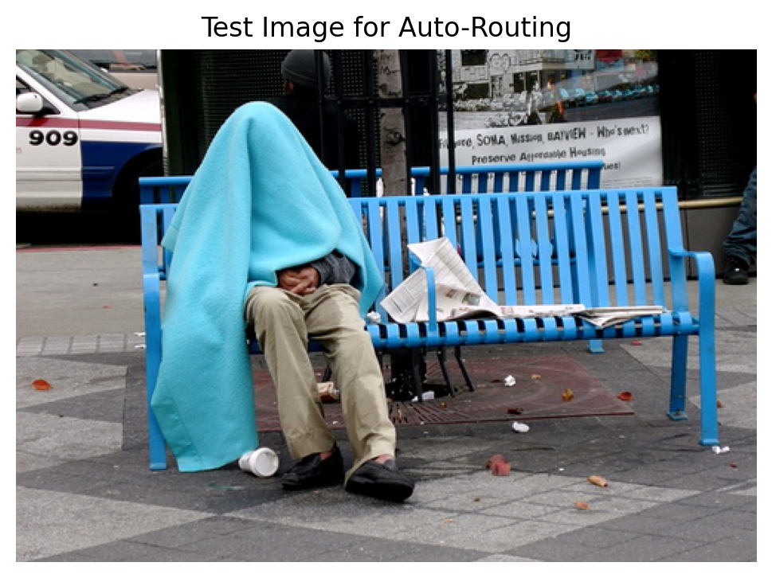

!uv pip install -q transformers datasets torch torchvision pillow accelerate einops timmIntroduction
In the multi-task VLM notebook, we built a model that handles caption, OD, and VQA - but it requires explicit task prompts:
- Caption:
"Describe this image." - OD:
"What objects? Output JSON." - VQA:
"Question: {q} Answer:"
What if the user just asks a question naturally without specifying the format? The model should automatically detect what they want:
| User Input | Detected Task | Output |
|---|---|---|
"What is in this image?" |
Caption | "A dog playing..." |
"Detect objects" |
OD | {"objects": [...]} |
"Is the dog happy?" |
VQA | "yes" |
Two Approaches to Task Routing
- Prefix-based routing (Simple)
- Add task tags:
[CAPTION],[OD],[VQA] - Model learns to generate appropriate output based on tag
- Add task tags:
- Intelligent routing (Advanced)
- Separate classifier predicts task from user query
- Routes to appropriate generation mode
- More flexible, user-friendly
We’ll implement both approaches in this notebook!
Setup
import torch
import torch.nn as nn
import torch.nn.functional as F
from torch.utils.data import DataLoader, Dataset, ConcatDataset
from transformers import (
AutoModelForCausalLM,
AutoTokenizer,
ViTModel,
ViTImageProcessor,
)
from datasets import load_dataset
from PIL import Image
import numpy as np
import matplotlib.pyplot as plt
from tqdm.auto import tqdm
import json
import random
import os
import warnings
warnings.filterwarnings('ignore')
%config InlineBackend.figure_format = 'retina'
device = torch.device("cuda" if torch.cuda.is_available() else "cpu")
print(f"Using device: {device}")/home/nipun.batra/.uv/nb-base/lib/python3.12/site-packages/tqdm/auto.py:21: TqdmWarning: IProgress not found. Please update jupyter and ipywidgets. See https://ipywidgets.readthedocs.io/en/stable/user_install.html
from .autonotebook import tqdm as notebook_tqdmUsing device: cudaPart 1: Load Multi-Task VLM Base
We’ll start from the multi-task trained model.
# Same VLM architecture as before
class VisionProjector(nn.Module):
"""Projects vision features into the language model's embedding space."""
def __init__(self, vision_dim: int, language_dim: int):
super().__init__()
self.projection = nn.Sequential(
nn.Linear(vision_dim, language_dim),
nn.GELU(),
nn.LayerNorm(language_dim),
nn.Linear(language_dim, language_dim),
)
def forward(self, vision_features: torch.Tensor) -> torch.Tensor:
return self.projection(vision_features)
class MiniVLM(nn.Module):
"""A minimal Vision-Language Model."""
def __init__(
self,
vision_encoder: ViTModel,
language_model: AutoModelForCausalLM,
projector: VisionProjector,
tokenizer: AutoTokenizer,
):
super().__init__()
self.vision_encoder = vision_encoder
self.language_model = language_model
self.projector = projector
self.tokenizer = tokenizer
for param in self.vision_encoder.parameters():
param.requires_grad = False
def encode_image(self, pixel_values: torch.Tensor) -> torch.Tensor:
with torch.no_grad():
vision_outputs = self.vision_encoder(pixel_values=pixel_values)
image_features = vision_outputs.last_hidden_state
projected = self.projector(image_features)
return projected
def forward(
self,
pixel_values: torch.Tensor,
input_ids: torch.Tensor,
attention_mask: torch.Tensor,
labels: torch.Tensor = None,
):
batch_size = pixel_values.shape[0]
image_embeds = self.encode_image(pixel_values)
num_image_tokens = image_embeds.shape[1]
text_embeds = self.language_model.get_input_embeddings()(input_ids)
combined_embeds = torch.cat([image_embeds, text_embeds], dim=1)
image_attention = torch.ones(
(batch_size, num_image_tokens),
dtype=attention_mask.dtype,
device=attention_mask.device
)
combined_attention = torch.cat([image_attention, attention_mask], dim=1)
if labels is not None:
image_labels = torch.full(
(batch_size, num_image_tokens),
fill_value=-100,
dtype=labels.dtype,
device=labels.device
)
combined_labels = torch.cat([image_labels, labels], dim=1)
else:
combined_labels = None
outputs = self.language_model(
inputs_embeds=combined_embeds,
attention_mask=combined_attention,
labels=combined_labels,
return_dict=True,
)
return outputs
@torch.no_grad()
def generate(
self,
pixel_values: torch.Tensor,
prompt: str,
max_new_tokens: int = 50,
temperature: float = 0.7,
do_sample: bool = True,
) -> str:
"""Generate a response for an image given a prompt."""
self.eval()
image_embeds = self.encode_image(pixel_values)
prompt_ids = self.tokenizer.encode(prompt, return_tensors="pt").to(pixel_values.device)
generated_ids = prompt_ids.clone()
for _ in range(max_new_tokens):
current_embeds = self.language_model.get_input_embeddings()(generated_ids)
full_embeds = torch.cat([image_embeds, current_embeds], dim=1)
outputs = self.language_model(inputs_embeds=full_embeds)
next_token_logits = outputs.logits[:, -1, :]
if do_sample:
probs = F.softmax(next_token_logits / temperature, dim=-1)
next_token = torch.multinomial(probs, num_samples=1)
else:
next_token = next_token_logits.argmax(dim=-1, keepdim=True)
generated_ids = torch.cat([generated_ids, next_token], dim=1)
if next_token.item() == self.tokenizer.eos_token_id:
break
return self.tokenizer.decode(generated_ids[0], skip_special_tokens=True)# Load base models
vision_model_name = "google/vit-base-patch16-224"
lm_model_name = "HuggingFaceTB/SmolLM-135M"
pretrained_dir = "mini-vlm-multitask" # Use multi-task model if available
fallback_dir = "mini-vlm-flickr8k" # Fallback to caption model
vision_encoder = ViTModel.from_pretrained(vision_model_name)
language_model = AutoModelForCausalLM.from_pretrained(lm_model_name)
tokenizer = AutoTokenizer.from_pretrained(lm_model_name)
image_processor = ViTImageProcessor.from_pretrained(vision_model_name)
if tokenizer.pad_token is None:
tokenizer.pad_token = tokenizer.eos_token
vision_dim = vision_encoder.config.hidden_size
language_dim = language_model.config.hidden_size
projector = VisionProjector(vision_dim, language_dim)
# Try to load multi-task model, fallback to caption model
loaded = False
for model_dir in [pretrained_dir, fallback_dir]:
checkpoint_path = f"{model_dir}/mini_vlm_multitask.pt" if model_dir == pretrained_dir else f"{model_dir}/mini_vlm_full.pt"
if os.path.exists(checkpoint_path):
print(f"Loading from {model_dir}/")
checkpoint = torch.load(checkpoint_path, map_location='cpu')
projector.load_state_dict(checkpoint['projector_state_dict'])
language_model.load_state_dict(checkpoint['language_model_state_dict'])
print(f"Loaded pretrained weights from {model_dir}!")
loaded = True
break
if not loaded:
print("No pretrained weights found. Starting from scratch.")
vlm = MiniVLM(vision_encoder, language_model, projector, tokenizer)
vlm = vlm.to(device)
print(f"\nModel loaded on {device}")
print(f"Trainable parameters: {sum(p.numel() for p in vlm.parameters() if p.requires_grad):,}")Some weights of ViTModel were not initialized from the model checkpoint at google/vit-base-patch16-224 and are newly initialized: ['pooler.dense.bias', 'pooler.dense.weight']
You should probably TRAIN this model on a down-stream task to be able to use it for predictions and inference.Loading from mini-vlm-multitask/
Loaded pretrained weights from mini-vlm-multitask!
Model loaded on cuda
Trainable parameters: 135,291,456Part 4: Test Tag-Based Routing
# Test with tags
test_image = caption_dataset[450]['image']
# Test each task tag
print("Testing tag-based routing:\n")
# Caption
pixel_values = image_processor(test_image, return_tensors="pt").pixel_values.to(device)
caption = vlm.generate(pixel_values, "[CAPTION]", max_new_tokens=40, temperature=0.7)
print(f"[CAPTION] tag: {caption}")
# OD
od_response = vlm.generate(pixel_values, "[OD]", max_new_tokens=150, temperature=0.3)
print(f"\n[OD] tag: {od_response[:120]}...")
# VQA
vqa_response = vlm.generate(pixel_values, "[VQA] What is the main color?", max_new_tokens=10, do_sample=False)
print(f"\n[VQA] tag: {vqa_response}")
# Show image
plt.figure(figsize=(6, 6))
plt.imshow(test_image)
plt.title("Test Image", fontsize=12)
plt.axis('off')
plt.show()Testing tag-based routing:
[CAPTION] tag: [CAPTION] A group of boys playing soccer on a school bench .
[OD] tag: [OD] {"objects": [{"label": "person", "bbox": [0.422, 0.113, 0.263, 0.824]}, {"label": "person", "bbox": [0.597, 0.23, 0...
[VQA] tag: [VQA] What is the main color? blue
Part 5: Approach 2 - Intelligent Query-Based Routing
Build a lightweight classifier that predicts task from natural language query: - "What's in this image?" → Caption - "Find all objects" → OD - "Is there a dog?" → VQA
# Task query patterns for synthetic routing data
CAPTION_QUERIES = [
"Describe this image",
"What's in this picture?",
"Tell me about this image",
"What do you see?",
"Caption this",
"What is shown here?",
]
OD_QUERIES = [
"Detect objects",
"Find all objects",
"What objects are present?",
"List objects with locations",
"Object detection",
"Show me bounding boxes",
]
VQA_TEMPLATES = [
"What {}",
"Is {}",
"How many {}",
"Where {}",
"Can you see {}",
"Does {}",
]
# Create synthetic routing training data
routing_data = []
# Caption queries
for query in CAPTION_QUERIES:
routing_data.append((query, 0)) # 0 = caption
# OD queries
for query in OD_QUERIES:
routing_data.append((query, 1)) # 1 = OD
# VQA queries (sample some real questions)
for i in range(min(20, len(vqa_samples))):
routing_data.append((vqa_samples[i]['question'], 2)) # 2 = VQA
print(f"Routing training samples: {len(routing_data)}")
print(f" Caption: {sum(1 for _, task in routing_data if task == 0)}")
print(f" OD: {sum(1 for _, task in routing_data if task == 1)}")
print(f" VQA: {sum(1 for _, task in routing_data if task == 2)}")Routing training samples: 32
Caption: 6
OD: 6
VQA: 20# Simple text-based task classifier
class TaskClassifier(nn.Module):
"""Classify task from text query."""
def __init__(self, tokenizer, hidden_dim=128, num_tasks=3):
super().__init__()
self.tokenizer = tokenizer
self.embedding = nn.Embedding(tokenizer.vocab_size, hidden_dim)
self.lstm = nn.LSTM(hidden_dim, hidden_dim, batch_first=True, bidirectional=True)
self.classifier = nn.Linear(hidden_dim * 2, num_tasks)
def forward(self, input_ids):
# input_ids: (batch, seq_len)
embeds = self.embedding(input_ids) # (batch, seq_len, hidden)
lstm_out, (h_n, c_n) = self.lstm(embeds) # h_n: (2, batch, hidden)
# Concatenate forward and backward hidden states
hidden = torch.cat([h_n[0], h_n[1]], dim=1) # (batch, hidden*2)
logits = self.classifier(hidden) # (batch, num_tasks)
return logits
task_classifier = TaskClassifier(tokenizer).to(device)
print(f"Task classifier parameters: {sum(p.numel() for p in task_classifier.parameters()):,}")Task classifier parameters: 6,556,419# Train task classifier
def train_task_classifier(model, data, num_epochs=10, lr=1e-3):
optimizer = torch.optim.Adam(model.parameters(), lr=lr)
criterion = nn.CrossEntropyLoss()
model.train()
for epoch in range(num_epochs):
total_loss = 0
correct = 0
# Shuffle data
random.shuffle(data)
for query, task_label in data:
# Tokenize query
tokens = tokenizer(query, return_tensors='pt', padding='max_length',
max_length=32, truncation=True)
input_ids = tokens['input_ids'].to(device)
# Forward
logits = model(input_ids)
target = torch.tensor([task_label]).to(device)
loss = criterion(logits, target)
# Backward
optimizer.zero_grad()
loss.backward()
optimizer.step()
total_loss += loss.item()
pred = logits.argmax(dim=1)
correct += (pred == target).sum().item()
avg_loss = total_loss / len(data)
accuracy = correct / len(data) * 100
print(f"Epoch {epoch+1}/{num_epochs} - Loss: {avg_loss:.4f}, Acc: {accuracy:.1f}%")
train_task_classifier(task_classifier, routing_data, num_epochs=20)Epoch 1/20 - Loss: 0.9861, Acc: 59.4%
Epoch 2/20 - Loss: 0.5711, Acc: 81.2%
Epoch 3/20 - Loss: 0.2639, Acc: 93.8%
Epoch 4/20 - Loss: 0.0797, Acc: 100.0%
Epoch 5/20 - Loss: 0.0227, Acc: 100.0%
Epoch 6/20 - Loss: 0.0099, Acc: 100.0%
Epoch 7/20 - Loss: 0.0063, Acc: 100.0%
Epoch 8/20 - Loss: 0.0046, Acc: 100.0%
Epoch 9/20 - Loss: 0.0036, Acc: 100.0%
Epoch 10/20 - Loss: 0.0028, Acc: 100.0%
Epoch 11/20 - Loss: 0.0023, Acc: 100.0%
Epoch 12/20 - Loss: 0.0020, Acc: 100.0%
Epoch 13/20 - Loss: 0.0017, Acc: 100.0%
Epoch 14/20 - Loss: 0.0015, Acc: 100.0%
Epoch 15/20 - Loss: 0.0013, Acc: 100.0%
Epoch 16/20 - Loss: 0.0012, Acc: 100.0%
Epoch 17/20 - Loss: 0.0011, Acc: 100.0%
Epoch 18/20 - Loss: 0.0010, Acc: 100.0%
Epoch 19/20 - Loss: 0.0009, Acc: 100.0%
Epoch 20/20 - Loss: 0.0008, Acc: 100.0%# Test task classifier
def predict_task(query, model, tokenizer):
"""Predict task from query."""
model.eval()
tokens = tokenizer(query, return_tensors='pt', padding='max_length',
max_length=32, truncation=True)
input_ids = tokens['input_ids'].to(device)
with torch.no_grad():
logits = model(input_ids)
pred = logits.argmax(dim=1).item()
task_names = ['CAPTION', 'OD', 'VQA']
return task_names[pred]
# Test queries
test_queries = [
"What's in this image?",
"Detect all objects",
"Is there a dog?",
"Describe the scene",
"Find objects with bounding boxes",
"What color is the sky?",
]
print("Task Classification Results:\n")
for query in test_queries:
task = predict_task(query, task_classifier, tokenizer)
print(f"Query: '{query}'")
print(f" → Predicted task: {task}\n")Task Classification Results:
Query: 'What's in this image?'
→ Predicted task: CAPTION
Query: 'Detect all objects'
→ Predicted task: OD
Query: 'Is there a dog?'
→ Predicted task: VQA
Query: 'Describe the scene'
→ Predicted task: CAPTION
Query: 'Find objects with bounding boxes'
→ Predicted task: OD
Query: 'What color is the sky?'
→ Predicted task: VQA
Part 6: Unified Inference with Auto-Routing
def auto_generate(image, query, vlm_model, classifier_model, image_processor, tokenizer, device):
"""Auto-route based on query and generate appropriate response."""
# Step 1: Classify task
task = predict_task(query, classifier_model, tokenizer)
# Step 2: Prepare image
if not isinstance(image, Image.Image):
image = Image.fromarray(image)
pixel_values = image_processor(image, return_tensors="pt").pixel_values.to(device)
# Step 3: Generate based on detected task
if task == 'CAPTION':
prompt = "[CAPTION]"
response = vlm_model.generate(pixel_values, prompt, max_new_tokens=40, temperature=0.7)
elif task == 'OD':
prompt = "[OD]"
response = vlm_model.generate(pixel_values, prompt, max_new_tokens=150, temperature=0.3)
else: # VQA
prompt = f"[VQA] {query}"
response = vlm_model.generate(pixel_values, prompt, max_new_tokens=10, do_sample=False)
# Extract answer
if task in response:
answer = response.split(task)[-1].strip()
else:
answer = response
return task, answer# Demo auto-routing
test_image = caption_dataset[400]['image']
queries = [
"What's in this picture?",
"Detect all objects",
"Is there a person?",
]
print("AUTO-ROUTING DEMO\n" + "="*70)
for query in queries:
task, answer = auto_generate(test_image, query, vlm, task_classifier,
image_processor, tokenizer, device)
print(f"\nQuery: '{query}'")
print(f"Detected Task: {task}")
print(f"Response: {answer[:100]}..." if len(answer) > 100 else f"Response: {answer}")
print("-" * 70)
# Show image
plt.figure(figsize=(6, 6))
plt.imshow(test_image)
plt.title("Test Image for Auto-Routing", fontsize=12)
plt.axis('off')
plt.show()AUTO-ROUTING DEMO
======================================================================
Query: 'What's in this picture?'
Detected Task: CAPTION
Response: ] A man in a blue shirt is sitting on a blue bench with a blue blanket covering his head .
----------------------------------------------------------------------
Query: 'Detect all objects'
Detected Task: OD
Response: ] {"objects": [{"label": "person", "bbox": [0.455, 0.242, 0.237, 0.758]}, {"label": "cat", "bbox": [...
----------------------------------------------------------------------
Query: 'Is there a person?'
Detected Task: VQA
Response: ] Is there a person? yes
----------------------------------------------------------------------
Part 7: Save Models
# Save tag-based VLM and task classifier
save_dir = "mini-vlm-routing"
os.makedirs(save_dir, exist_ok=True)
# Save VLM with tags
torch.save({
'projector_state_dict': vlm.projector.state_dict(),
'language_model_state_dict': vlm.language_model.state_dict(),
'config': {
'vision_model_name': vision_model_name,
'lm_model_name': lm_model_name,
'vision_dim': vision_dim,
'language_dim': language_dim,
},
}, f"{save_dir}/vlm_with_tags.pt")
# Save task classifier
torch.save({
'state_dict': task_classifier.state_dict(),
'config': {
'hidden_dim': 128,
'num_tasks': 3,
},
}, f"{save_dir}/task_classifier.pt")
tokenizer.save_pretrained(f"{save_dir}/tokenizer")
image_processor.save_pretrained(f"{save_dir}/image_processor")
print(f"Models saved to {save_dir}/")
print(f"Contents: {os.listdir(save_dir)}")Models saved to mini-vlm-routing/
Contents: ['tokenizer', 'vlm_with_tags.pt', 'task_classifier.pt', 'image_processor']Summary
We implemented two approaches to task routing:
2. Intelligent Query-Based Routing (Advanced)
- Separate classifier predicts task from query
- Routes to appropriate generation mode
- Pros: Natural language interface, user-friendly
- Cons: Requires additional classifier, two-stage inference
Routing Pipeline
User Query → Task Classifier → Predict Task → Route to VLM with Tag → Generate
"What's (LSTM-based) (Caption) [CAPTION] prompt Output
in image?" Key Insights
- Task tags are lightweight and effective
- Query classification enables natural interaction
- Hybrid approach combines both for flexibility
- Synthetic routing data works well for simple classifier
Comparison
| Approach | User Experience | Complexity | Accuracy |
|---|---|---|---|
| Explicit tags | Must use tags | Low | Perfect |
| Intelligent routing | Natural language | Medium | ~90-95% |
| Hybrid | Both supported | Medium | Best |
Limitations
- Simple LSTM classifier (could use BERT)
- Small routing dataset (synthetic)
- No ambiguous query handling
- No multi-task queries (“caption and detect”)
Next Steps
- Better classifier - use pretrained BERT/DistilBERT
- More routing data - collect real user queries
- Confidence scores - when to ask for clarification
- Multi-task routing - handle “caption and find objects”
- Active learning - improve classifier from errors
References
- Multi-Task VLM
- Task-Oriented Dialogue Systems
- Mixture of Experts - Similar routing concept
- BERT for Text Classification